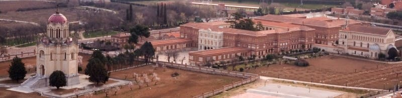

This period corresponds to a period of political, social and economic decline despite being the best cultural epoch of Spain known as Golden century. Guadalajara in this period experiment an important primarily caused by the movement of the nobility of the city to the capital of Spain, to address the issues of court. At this time palace of infantado is reformed and the aforementioned pantheon was built. Guadalajara At this time had about 2,000 houses which could be 10,000 population. However this population will decrease after events such as the discovery of America, the expulsion of the Moors or the movement of the nobility to Madrid. Important was this movement since its entire population, around 3% were squires and 20% depended directly on this area of ralengo in the city, as servants, deputy clergy and workers.
Change of dynasty in Spain happen and Guadalajara support the Bourbons. This facts cause that the debts he had with the monarchy were cancelled. In order to pay the fidelity Guadalajara king Felipe V ordered to build it as a Real Tejidos , to improve the city at this time. Although the depopulation was already huge in the city where it was arrive to have 2.000 population from 10.000. Buildings of this period are: Real textile factory located opposite Infantado palace where the palace of the Marquis of MontesClaros was and who later became the military academy of engineers. Guadalajara had 14 convents, the most important of the Carmelite still standing in the street Ingeniero Mariño.. The Carmen convent is this time, next to the square of the small garden.
At this time Guadalajara continue in its period of decline. Reflecting this decline the state in which Infantado Palace insignia of the city that had hosted two royal weddings in the past and where many Grandes of Spain had stayed was completely uninhabited and was neglected. Infantado Dukes besides losing the name Mendoza that as much fame gave them no longer had barely clinging to Guadalajara and due to crosses with other noble families of Spain had inherited great fortunes and other with which they had to do with Guadalajara had passed into the background. At this time the war of independence, an event that will bring with if more misfortune if they fit the city of Guadalajara will gestate. A few years after the war the city had about 5,000 inhabitants and about 1,300 houses, reduced to almost half the length of the city in two centuries. Something almost unheard among the cities that once were important in Spanish politics. Guadalajara was the biggest town of the region that was about 150,000. Another fact is the reduction from 15 churches to 9 churches and 14 convents would remain, except that of the Jesuits which was abandoned after the expulsion of the order years ago. Due to the reduction of population four churches were eliminated from 9, San Esteban, San Andres, San Miguel and Santo Tome , leaving only 5. While Santo Tome will become the chapel of Our Lady of Antigua, patron of the city of Guadalajara today. While San Miguel disappeared, the adjacent chapel that was built Luis de Lucena after stay intact and is one of the symbols of our city today.
It is also here when a reform in the former Royal Factory of Fabrics or cloths factory to become Academy of Engineers where many achievements would be down later. Where he had studied the true inventor of radio, Julio Cervera Baviera that managed to send the human voice between Alicante and Ibiza in 1902, 11 years before Marconi. In this century, the legacy of the Dukes of Infantado passed to the ducal house of Osuna since the Duke died childless. This new Duke Mariano Tellez will be carefree of his legacy in Guadalajara and when he died without children their titles jump to the family of Arteaga who are the current owners of Infantado. At this time there were still many palaces standing of a time like Davalos (current library of Guadalajara), the Counts of Coruña (destroyed near the Banco de España), Cotilla Palace (music school and now a museum) and others that were demolished.
The most notable families in this period were the Counts of Vega del Pozo who had his palace in the current school Marist of Guadalajara. He also owned the whole mountain of Sotillo south of Guadalajara. Her older sister founded the order of Adoratrizes that spanned several countries.
Now kept everything having built a school with the name of the order and a Pantheon where his remains a symbol of Guadalajara, built by Velazquez Bosco . © 2016 - All Rights Reserved - Diseñada por Sergio López Martínez
![[Valid RSS]](https://www.feedvalidator.org/images/valid-rss-rogers.png "Validate my RSS feed")